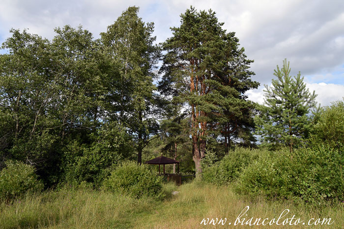
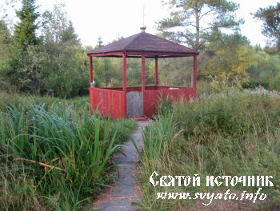
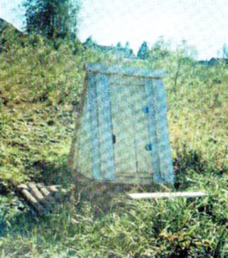
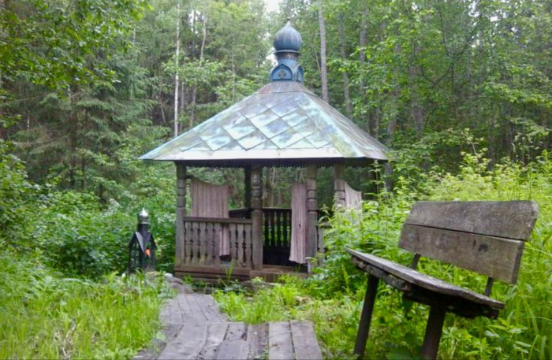

Кувшиново
КУВШИНОВО
По-настоящему символом природы Кувшиновского района являются родники, которых около 11 в районе.
1. Источник в деревне Облово.
 Источник иконы Пресвятой Богородицы Неопалимая Купина, оберегаемый и почитаемый местными жителями. Икона, в честь которой назван родник, оберегает дом от пожара и способствует благополучию в семье, поэтому люди приезжают за этой водой, чтобы окропить свои квартиры и дома.
2. Родник «Росинка» в деревне Могилевка
Источник находится в пойме реки Цны. Учащиеся местной школы провели его благоустройство, чтобы каждый желающий мог испить воды из этого источника.
3. «Живоносный источник» в деревне Ново
На опушке леса близ деревни Ново находится чудесный родник, который помогает женщинам, которые не могут забеременеть. Раньше на святом источнике стояла каменная часовня, по легенде место для ее строительства указала сама Матерь Божия, оставив след «божью стопку», похожий на отпечаток ступни, на камне.